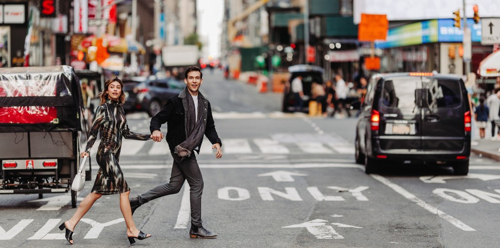
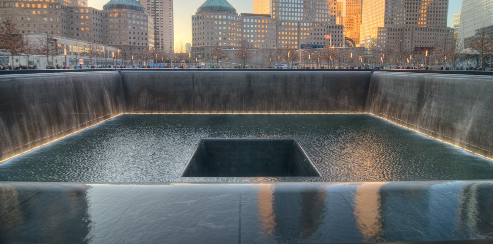

Discover Your Adventure in New York
Central Park: A Winter Wonderland
Experience the magical transformation of Central Park in winter. From ice skating at Wollman Rink to taking in the breathtaking views of snow-covered trees, this iconic park is the perfect place for winter activities and moments of tranquility. Explore seasonal events and cozy cafes, and enjoy a winter wonderland in the heart of New York City.
Times Square: The Heart of the City
Times Square is a symbol of New York’s energy and vibrancy. No matter the season, this bustling intersection never sleeps. Whether you're catching a Broadway show, marveling at the flashing billboards, or celebrating the new year with thousands of others, Times Square is a must-see destination for anyone visiting the city.
Explore NoMad and Greenwich Village
From the sleek hotels of NoMad to the artistic charm of Greenwich Village, these neighborhoods offer a unique blend of history, art, and modern living. Wander through cobblestone streets adorned with festive lights, enjoy rooftop cocktails, and explore the hidden gems of the city’s cultural districts.
Lower Manhattan & Financial District
Lower Manhattan combines the old and the new, from the historic streets of the Financial District to the modern skyscrapers that make up the city's skyline. Visit the 9/11 Memorial, enjoy panoramic views from One World Observatory, or stroll along the scenic waterfront for a peaceful moment amidst the city's vibrant energy.
Brooklyn: Culture and Charm
Brooklyn is where creativity thrives. From the Brooklyn Bridge to vibrant neighborhoods like Williamsburg, Brooklyn is a cultural hub full of art, music, and food. Discover the charm of historic brownstones, cozy coffee shops, and vibrant street art. Whether it’s winter markets or jazz clubs, Brooklyn offers something unique at every corner.
Hudson River Waterfront: A Peaceful Getaway
Escape the hustle and bustle of the city with a visit to the scenic Hudson River Waterfront. Explore charming towns like Hoboken, with their holiday lights and festive markets, or take a leisurely bike ride along the waterfront. For a memorable experience, take a ferry to Ellis Island and explore New York's rich history.
Upper East Side: Luxury and Culture
The Upper East Side is known for its upscale living, world-class museums, and stunning architecture. Take a leisurely walk through Central Park, explore the Metropolitan Museum of Art, or shop along Madison Avenue. This elegant neighborhood offers a refined experience that is perfect for those looking to immerse themselves in the city’s rich culture.